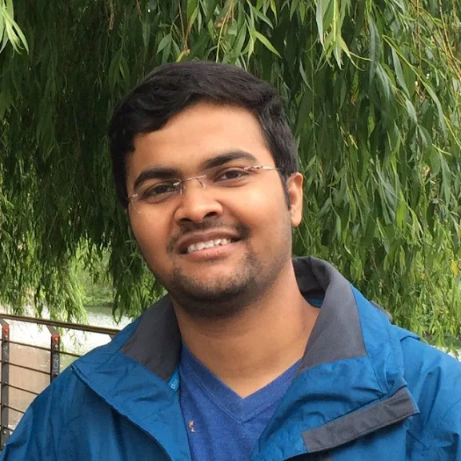
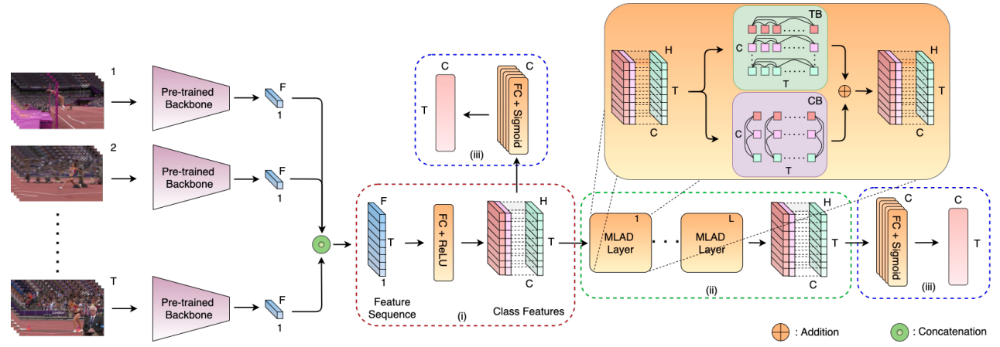
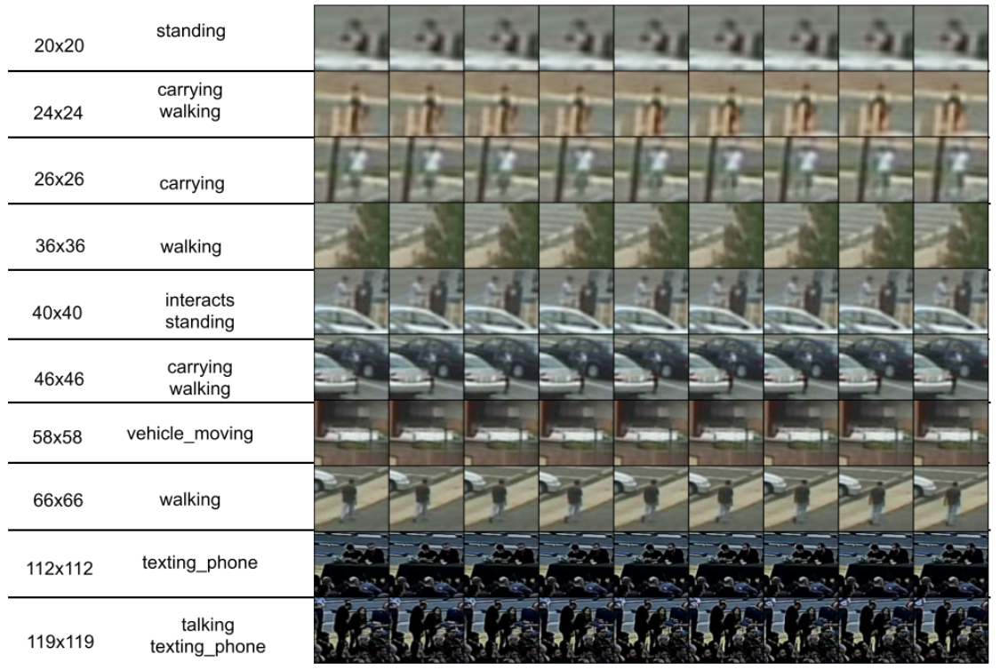
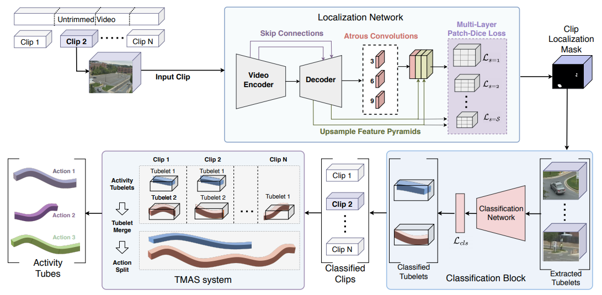
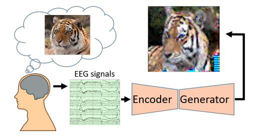
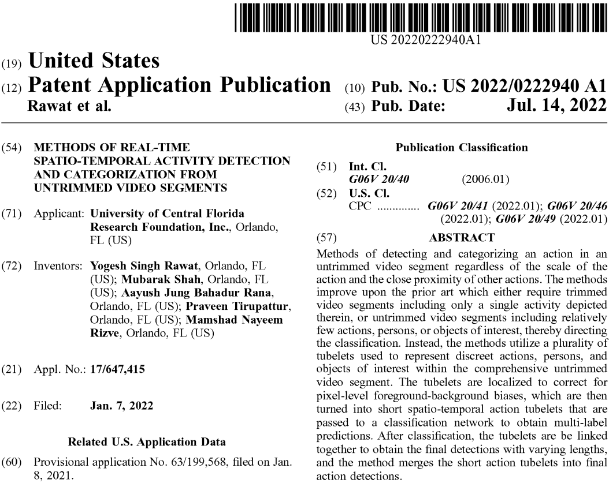

|
Praveen Tirupattur Currently, I am pursuing my Ph.D. at the Center for Research in Computer Vision, UCF, under the guidance of Prof. Mubarak Shah. My research interests span various domains within computer vision and machine learning. During my doctoral studies, I have focused extensively on tackling diverse challenges in video comprehension using supervised, weakly supervised, self-supervised and zero-shot learning. This includes tasks such as action detection, temporal action localization, and complex activity recognition. I have also worked on anomaly detection, gait recognition, person-reid, and on video understanding using large lanuage models. |
 |
Research |
|  |
Praveen Tirupattur, Kevin Duarte, Yogesh S Rawat, Mubarak Shah CVPR, 2021 (Oral) arxiv / code / bibtex / slides / video We propose an attention-based architecture to capture action relationships in the context of temporal action localization within untrimmed videos. Our approach discerns between relationships among actions unfolding simultaneously and those occurring at different time steps, labeling them as distinct action dependencies. To enhance action localization performance, we introduce a novel Multi-Label Action Dependency (MLAD) layer, leveraging attention mechanisms to model these intricate dependencies. |
|  |
Praveen Tirupattur, Aayush Jung Rana, Tushar Sangam, Shruti Vyas, Yogesh S Rawat, Mubarak Shah CVPR, 2021 arxiv / dataset / bibtex / web page This paper outlines the TinyAction Challenge held at CVPR 2021, focusing on recognizing real-world low-resolution activities in security videos. It introduces the benchmark dataset TinyVIRAT-v2, an extension of TinyVIRAT, featuring naturally occurring low-resolution actions from security videos. The challenge aims to address the difficulty of action recognition in tiny regions, providing a benchmark for state-of-the-art methods. |
|  |
Mamshad Nayeem Rizve, Ugur Demir, Praveen Tirupattur, Aayush Jung Rana, Kevin Duarte, Ishan Dave, Yogesh S Rawat, Mubarak Shah ICPR, 2020 (Best paper award) arxiv / project page / bibtex / slides / video Gabriella consists of three stages: tubelet extraction, activity classification, and online tubelet merging. Gabriella utilizes a localization network for tubelet extraction, with a novel Patch-Dice loss to handle variations in actor size, and a Tubelet-Merge Action-Split (TMAS) algorithm to detect activities efficiently and robustly. |
|  |
Praveen Tirupattur, Yogesh S Rawat, Concetto Spampinato, Mubarak Shah ACM MM, 2018 code / bibtex / poster This paper explores decoding and visualizing human thoughts through Brain Computer Interface (BCI) research. Using ElectroEncephaloGram (EEG) signals, the proposed conditional Generative Adversarial Network (GAN) effectively synthesizes visual representations of specific thoughts, such as digits, characters, or objects. The study showcases the potential of extracting meaningful visualizations from limited EEG data, demonstrating the explicit encoding of thoughts in brain signals for semantically relevant image generation. |
Patents |
|  |
Yogesh S Rawat, Mubarak Shah, Aayush Jung Rana, Praveen Tirupattur , Mamshad Nayeem Rizve US Patent 11468676 Details |
Internships |
|
|
Research Scientist/ Engineer Intern
Amazon Inc., Palo Alto, California, USA. May 2023- Nov 2023 Mentor: Jay Krishnan Worked on representation learning for long-form video understanding with vision-language training. Explored the idea of leveraging pre-trained Large Language Models (LLMs) to improve temporal understanding of video models. |
|
Research Scientist Intern
Pinterest Inc., Remote, USA. May 2022 - Aug 2022 Mentor: Rex Wu Worked on building a unified model for both image and video representation learning. Explored large-scale self-supervised training to learn representations for multiple visual modalities. Obtained improved performance over the in-house image-based model using the multi-modal training. |
 |
1st place, 2021 -
PMiss@0.02tfa, ActivityNet ActEV SDL (CVPR)
1st place, 2020 -
PMiss and nAUDC, ActivityNet ActEV SDL (CVPR)
Winner Topic-4, 2020 -
NIST ASAPS Challenge, Contest-1
Best Paper Award, 2020 -
International Conference on Pattern Recognition ( ICPR )
ORCGS Doctoral Fellowship, 2017 - University of Central Florida
|
Professional Activities |

{kind=link}